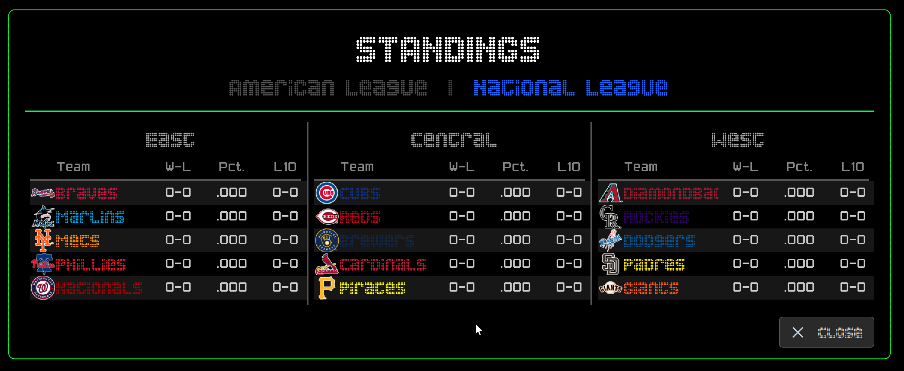
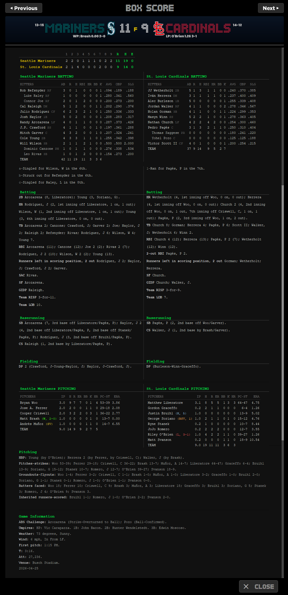
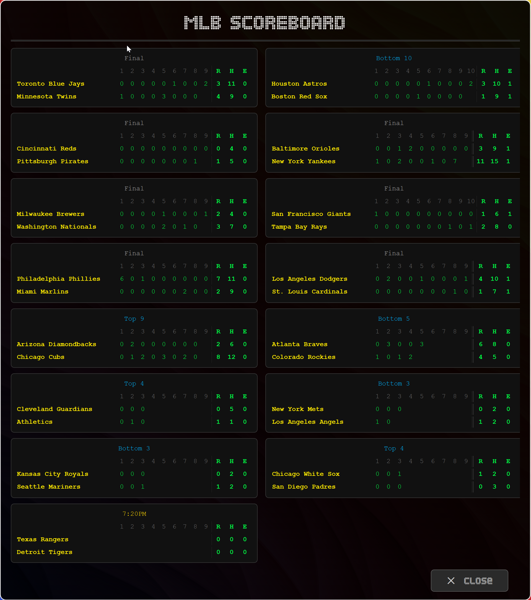
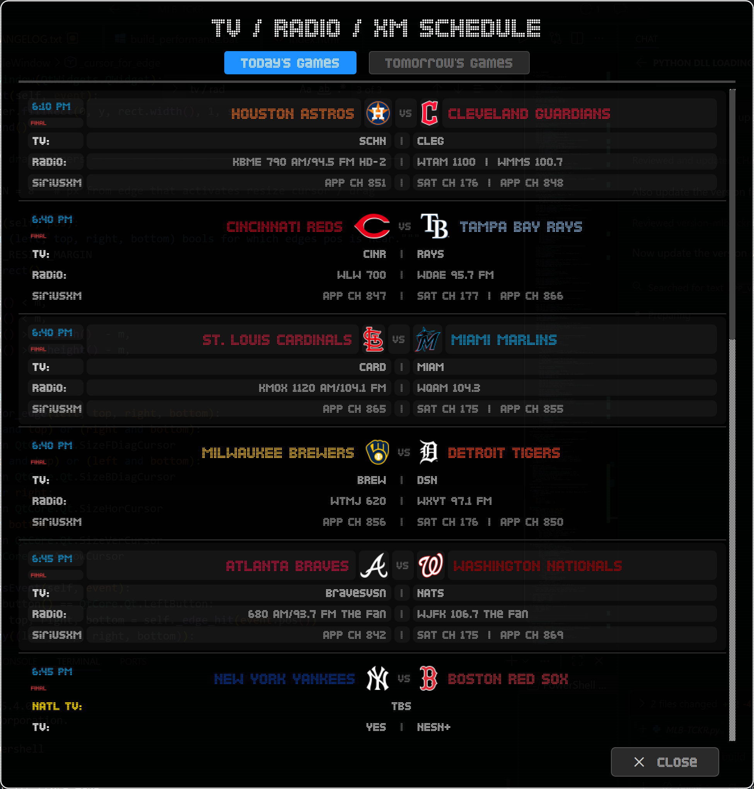

MLB-TCKR docks at the top of your desktop and keeps every game moving across your screen. Check live scores, inning flow, and matchup details without opening a browser tab.
Designed to feel like a modern sports-bar ticker on your own desktop.
Follow every active game with smooth, always-on motion. Real-time scores, outs, and base runners update automatically.
See exactly who’s at bat and on the mound, including season stats like ERA, live pitch counts and batting average.
See the day’s entire scoreboard by pressing S or view any game’s box score by double-clicking on the game in the ticker or by pressing B. All the stats are here, just like they were in the morning newspaper or on your favorite sports website. All updated in real-time too.
Every team is recognizable in its official primary, secondary, or tertiary colors with authentic high-res logos.
Docks as a native Windows AppBar. It stays pinned at the top without overlapping your windows, keeping scores in sight while you work (sure) or play.
Full control over speed, thickness, fonts, and game filters. Show alerts for all the teams or just your favorites.
Pop open the live standings board to see AL and NL divisions, W-L records, Win %, and Last 10 — all sorted in real-time. Press L to toggle.
Look back at yesterday’s finals, today’s in-game progress, or peek at tomorrow’s probable pitchers. MLB-TCKR lets you cycle through dates so you never lose the narrative of the season.
Once the game is over, the ticker shows the winning and losing pitchers, their season records, and key final stats for a complete post-game wrap.
Follow specific teams or the entire league with full-viewport scoring alerts. Get notified the moment they score, when their game starts, and when the final score is in — all rendered in official team colors.
Press M to open the broadcast schedule for every game today or tomorrow. See TV call signs, radio stations with frequencies, and SiriusXM satellite & app channels for both teams — all in one sleek window.
Live H2H moneyline odds scroll right in the ticker. Choose from three providers: Action Network (no API key needed), The Odds API, or Odds‑API.io — all configurable in Settings.
Press S and then switch between American League and National League with a single click. Every division, every team, live.

AL & NL Standings window with live division dataPress B or double-click on your team in the ticker for live box scores updated in real-time. Yesterday’s box scores available too.

Box Score with live and historical dataPress S to display the day’s linescore — displays the final score and inning-by-inning scoring, including runs scored, hits, and errors for each team.

Scoreboard window with day-wide line scores and game statusPress M or right-click the tray to open the broadcast guide. TV call signs, radio stations with frequencies, and SiriusXM satellite & app channels — for today or tomorrow.

TV / Radio / XM Schedule window — today’s games with full broadcast detailsFrom pre-game through late innings, MLB-TCKR keeps the story flowing.
Fast to launch, easy to personalize, built for everyday baseball fans.
Start the app and it docks to the top of your screen with today's MLB slate.
Choose fonts, colors, and pacing to match your setup and game-day mood.
Let scores, inning state, and matchup updates roll while you work, watch, or stream.
A cleaner, brighter way to keep up with every game.
Get MLB-TCKR